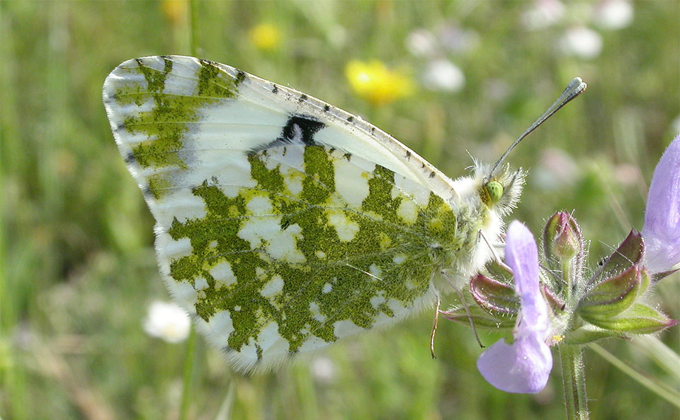

Fluture Creamy Marblewing
Fluturele Creamy Marblewing, cunoscut si sub numele de Baeotus marblewing, este o specie de fluture din familia Papilionidae, intalnita in America de Sud. Este o specie neobisnuita si atragatoare, cu aripile sale crem si maro deschis acoperite de marmorate.
Acest fluture este considerat un important polenizator pentru plantele din regiunea sa nativa. Larvele sale se hrănesc cu frunzele plantelor din familia Aristolochiaceae.